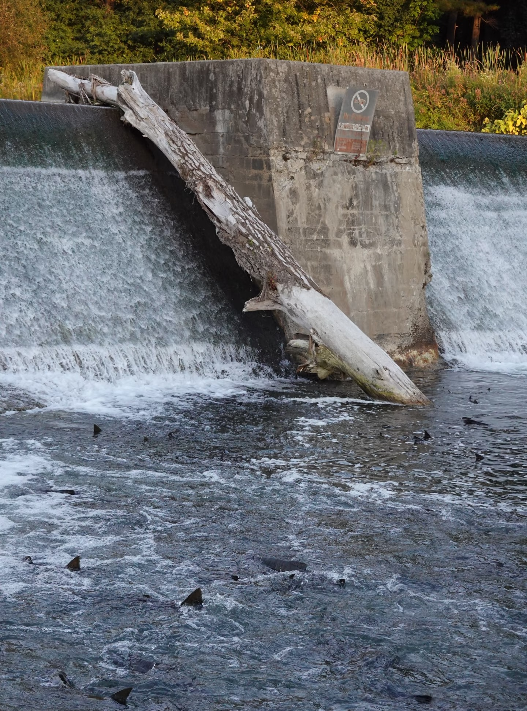
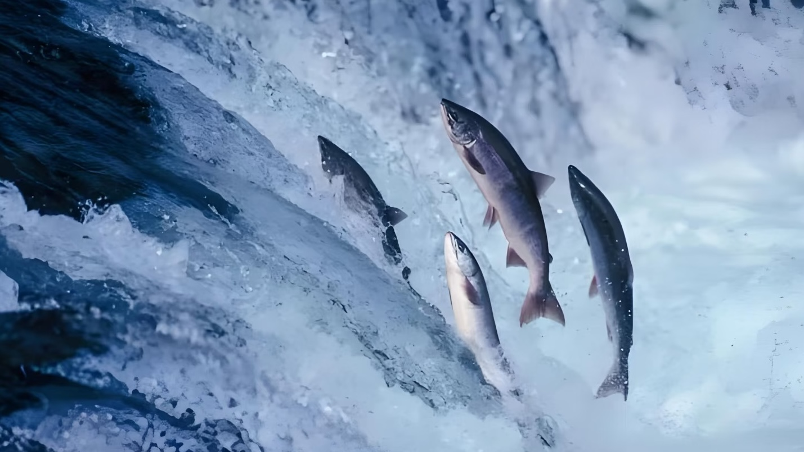
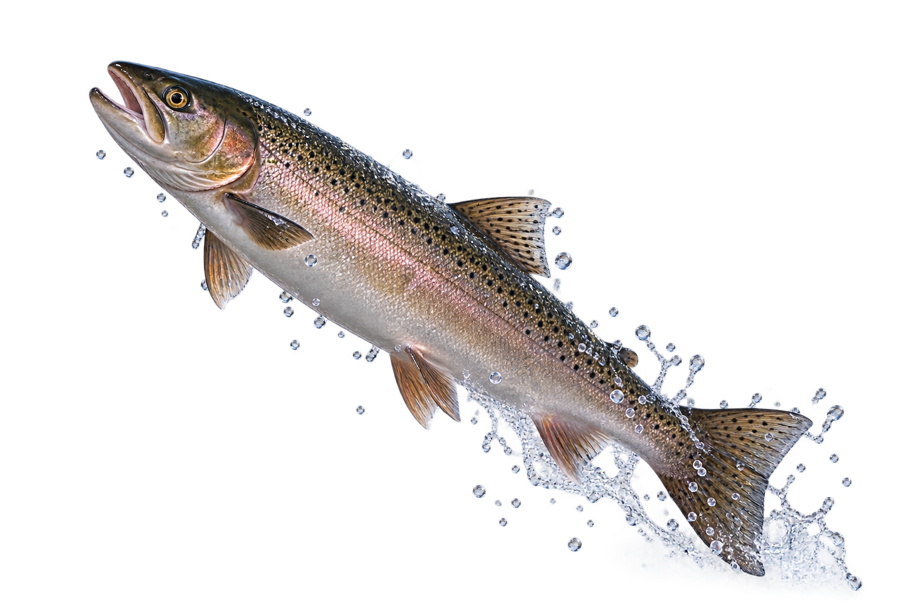

Every year, salmon leave the ocean and travel back into freshwater. Their journey upstream is one of the most interesting migrations in nature.
01 / WHY?
Salmon swim against strong currents and travel long distances during their migration. Why do they make this difficult journey?
Adult salmon return to spawning areas in freshwater, often close to where they were born. They lay their eggs there and begin the next generation of salmon.
02 / THE JOURNEY
Move your mouse over the image to see the main stages of a salmon's migration.

Salmon spend part of their adult lives in the ocean.
They leave the ocean and enter freshwater rivers.
They swim against the current and pass many obstacles.
They reach their spawning area and reproduce.
03 / THE CHALLENGE
The journey upstream can be difficult. Salmon have to swim against the current and sometimes jump over waterfalls and other obstacles.
Press S to help the salmon jump upstream.

Spawning Ground
The salmon made it home!